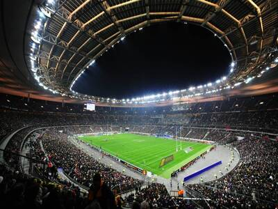

Clássico do Futebol Termina em Empate Emocionante
O clássico entre Flamengo e Fluminense terminou em um empate de 3 a 3, com gols marcados nos últimos minutos do jogo. A partida foi considerada uma das melhores do campeonato até agora.
A delegação brasileira comemora mais uma medalha de ouro nos Jogos Olímpicos. O atleta João Silva surpreendeu o mundo ao estabelecer um novo recorde mundial na prova dos 100 metros rasos.
O clássico entre Flamengo e Fluminense terminou em um empate de 3 a 3, com gols marcados nos últimos minutos do jogo. A partida foi considerada uma das melhores do campeonato até agora.
Maria Oliveira fez história ao se tornar a primeira tenista brasileira a chegar às semifinais de Wimbledon. Sua próxima adversária será a atual campeã do torneio.
Os underdogs do campeonato continuam sua jornada surpreendente nos playoffs da NBA, eliminando mais um favorito ao título. A equipe jovem tem chamado a atenção de fãs e especialistas.